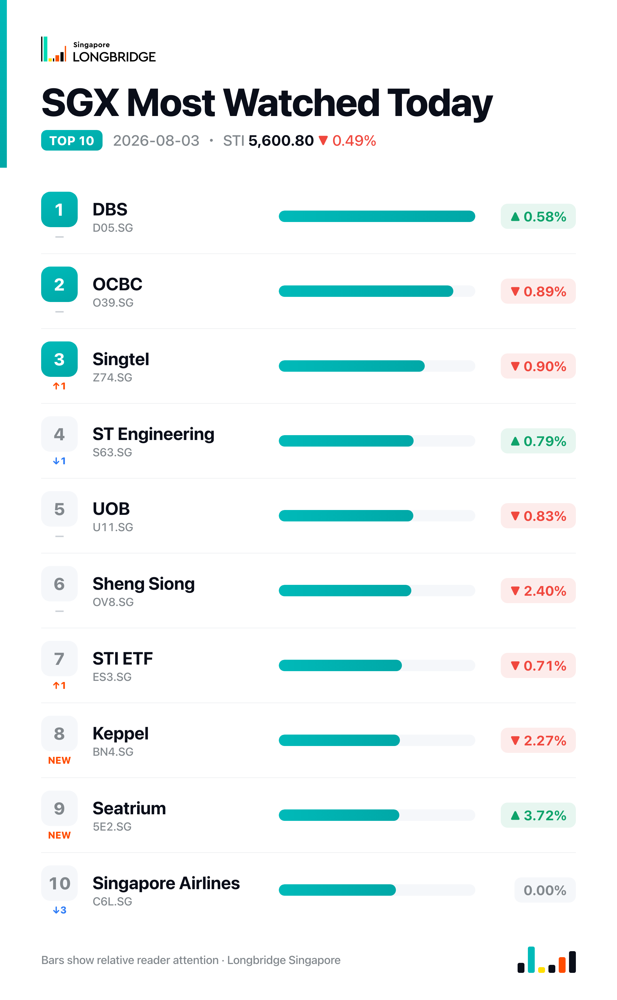

STI Slips 0.49% to 5,600.80 as Banks Diverge Again and Seatrium Extends Earnings Rally
The Straits Times Index closed at 5,600.80 on Monday, down 27.70 points, or 0.49%, after ranging between 5,590.93 and 5,630.49 during the session. Decliners outnumbered advancers across the benchmark's 30 constituents, 16 lower against eight higher and six unchanged, with Jardine Cycle & Carriage leading the session's losses and Seatrium leading the gains.
The pullback was concentrated in conglomerates and part of the banking sector: Jardine Cycle & Carriage, Hongkong Land and Jardine Matheson each fell more than 1.8%, Keppel dropped 2.27%, and OCBC and UOB extended part of Friday's bank-sector weakness. Gains were led by the offshore & marine and industrials complex, where Seatrium, Yangzijiang Shipbuilding and SATS each advanced more than 1%, tracking company-specific earnings updates rather than a broad-based rally.
Session Movers
Seatrium (5E2.SG, +3.72%) extended its post-earnings advance to lead Monday's gainers, a session after Friday's results showed first-half net profit surging 158% to S$373 million on a S$13.3 billion order book, more than 95% of it higher-margin Series Build work. The group also raised its full-year profit guidance and flagged an opportunity pipeline it expects to top S$32 billion over the next two years, split between oil & gas and offshore wind. Seatrium trades at 0.99 times book, below its peer group's 1.34 times median, with a consensus Buy rating and a S$2.60 target implying about 17% upside.
Jardine Cycle & Carriage (C07.SG, -3.91%) led the session's declines, a session after first-half net profit fell 2% to S$464 million on an 8% drop in revenue, with underlying profit down 11% on weaker Indonesia and Singapore contributions. The group divested its Vinamilk and Toyota stakes for a combined S$427 million, paired its interim dividend with a special dividend of roughly 93 cents partly settled in Toyota shares, and proposed renaming itself Jardine Matheson Southeast Asia. The stock trades at 9.11 times earnings, cheaper than its own five-year median of 9.87 times, with a consensus Hold rating and a S$28.56 target only slightly above current levels.
Keppel (BN4.SG, -2.27%) fell for a second straight session as investors continued digesting Friday's first-half results, where net profit dropped 59% year-on-year on losses tied to non-core holdings including M1, even as core operating businesses posted stronger underlying growth. The group has otherwise pressed ahead with its shift toward asset management, securing S$8 billion in long-term inflation-linked contracts and raising S$13.5 billion in July for its funds under management. Keppel trades at 1.91 times book, near the top of its own one-year range, with a consensus Buy rating and a S$12.76 target implying roughly 14% upside.
ST Engineering (S63.SG, +0.79%) added to recent gains with no fresh company-specific news Monday, still carrying momentum from last week's S$840 million turnkey rail contract for Taiwan's Taoyuan MRT Brown Line, won in consortium with Hyundai Rotem, alongside a widening pipeline of counter-drone deployments across Asia. Consensus recommends Buy with an S$11.51 target, about 13% above current levels.

One point worth noting
For a third straight session, Singapore's three banks failed to move together. Thursday's split saw OCBC alone drop 2.28% while DBS and UOB were little changed; Friday's roles reversed, with DBS (-1.11%) and UOB (-1.09%) leading the trio lower as OCBC edged up 0.10%; and Monday leadership rotated again, with DBS rising 0.58% as the trio's lone advancer while OCBC fell 0.89% and UOB fell 0.83%. Three sessions running, no single bank has led or lagged twice, pointing to stock-specific positioning rather than a shared view on the sector.
This recap is for informational purposes only and does not constitute investment advice.